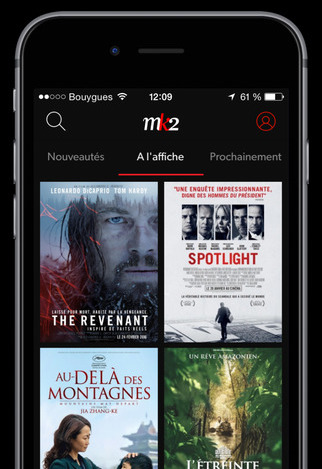
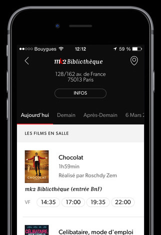
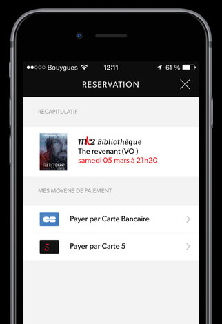
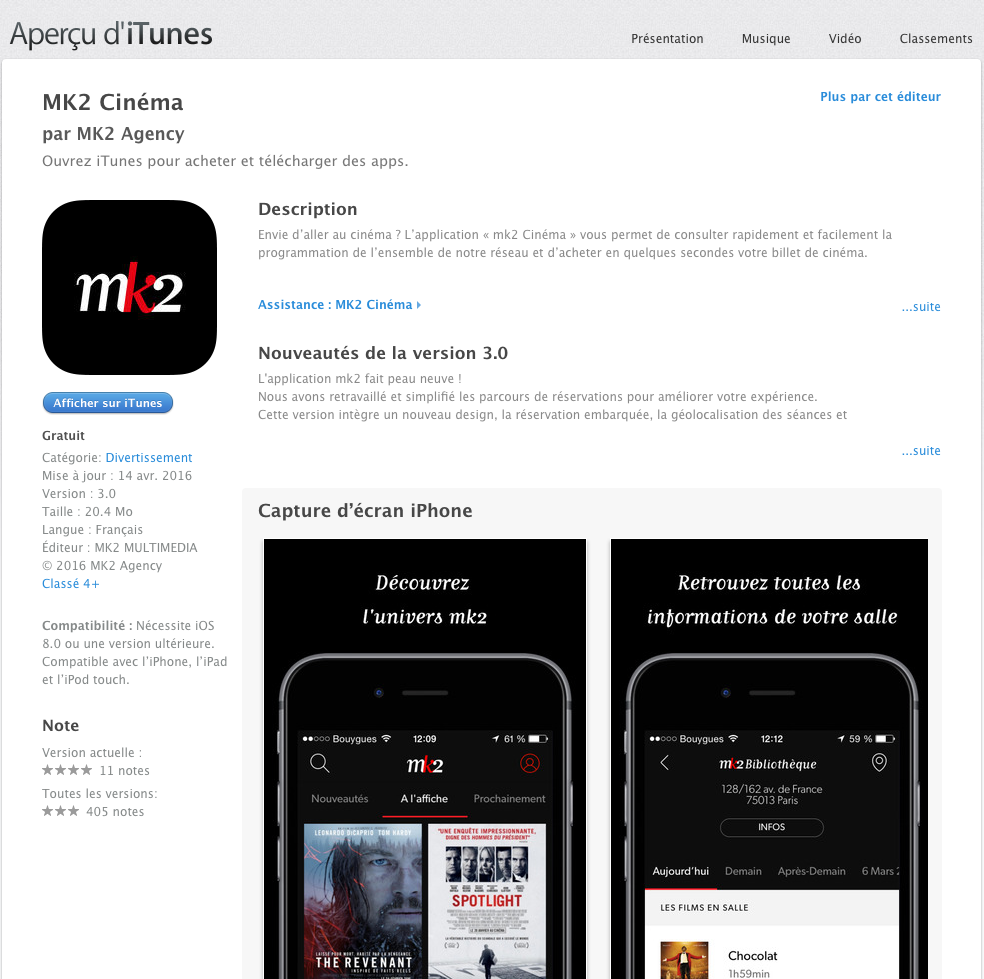

Par @CommerceGuys by @actualys
Site développé avec Drupal et Drupal Commerce en 2013 par Commerce Guys.
Présente l'ensemble des salles parisiennes du groupe et permet de réserver en ligne leurs séances.
Les fonctionnalités du site:
Mis en place avec plusieurs modules contrib : tels que Services et Views et échange en JSON en se basant sur REST.
[
[
{
"nid": "123",
"épinglé": "0",
"title": "Demain",
...
},
{
"nid": "456",
"épinglé": "1",
"title": "Hier",
...
},
...
]
]
[
{
"nid": "123",
"épinglé": "0",
"title": "Demain",
...
}
]
[
[
{
"seance_id": "123",
"seance_date": "06/09/2016 - 00:00",
"seance_visa": "140040",
...
},
{
"seance_id": "124",
"seance_date": "07/09/2016 - 00:00",
"seance_visa": "140041",
...
},
...
]
]
Les 3 objectifs que nous nous sommes fixés pour la mise en place de ces nouvelle API sont:
Ce projet comportait la complexité de devoir être mené en parallèle du développement d’une nouvelle application iOS. Cette coordination de 2 projets a nécessité :
Ce module permet de définir des clés d'authentifications liées à un utilisateur drupal.
Les requêtes sont toujours construites directement dans la ressource:
/**
* Gets an event encoded in JSON.
*
* @param int $id
* Id of the event.
* @param string $includes
* The objects this object should return.
*
* @return
* Returns null if the event doesn't exist or the JSON encoded node.
*/
function _events_resource_retrieve($nid, $includes) {
if ($node = node_load($nid)) {
$node_wrapper = entity_metadata_wrapper('node', $node);
$includes = _mk2_webservices3_get_includes_as_array($includes);
_mk2_webservices3_validate_includes($includes, array('movies'));
$out = new Mk2Webservices3Event($node_wrapper, $includes);
}
else {
$message = t('The event !nid does not exist!', array('!nid' => $nid));
services_error($message, 404, array(
'error' => $message,
'error_node' => 'events.not_found'
));
return NULL;
}
return array('event' => $out);
}
Le json est généré à partir d'objets (classes)
class Mk2Webservices3Event implements JsonSerializable {
/**
* Constructor.
*/
public function __construct($wrapper, $includes = array(), $data = array()) {
// ...
}
// Getters/setters
// ...
/**
* function called when encoded with json_encode.
*
* @return array
*/
public function jsonSerialize()
{
return get_object_vars($this);
}
}
Utilisation de la méthode services_error() du module services pour générer des erreurs:
$message = t('The event !nid does not exist!', array('!nid' => $nid));
services_error($message, 404, array(
'error' => $message,
'error_code' => 'events.not_found'
));
Ce qui affiche:
{
"error": "The event 123456 does not exist!",
"error_code": "events.not_found"
}
Utilisation d'une méthode générique pour formater les résultats de formulaires en erreur ce qui affichera:
{
"error": "Field name is required. Birthday date cannot be in future.",
"error_code": "user.form.error",
"form_errors" {
"name": {
"error": "Field name is required.",
"error_code": "user.form.name",
},
"field_birthday": {
"error": "Birthday date cannot be in future.",
"error_code": "user.form.field_birthday",
}
}
}
Utilisation du hook hook_rest_server_execute_errors_alter() pour surcharger les messages d'erreurs non gérés de manière à ce qu'ils suivent la structure souhaitée.
/**
* Implements hook_rest_server_execute_errors_alter().
*/
function mk2_webservices3_rest_server_execute_errors_alter(&$error_alter_array, $controller, $arguments) {
if (!is_array($error_alter_array['body_data'])) {
$error_alter_array['body_data'] = array(
'error' => $error_alter_array['body_data'],
'error_code' => 'generic.error.' . $error_alter_array['code'],
);
}
}
La version 3 de l’application iOS mk2 exploite plusieurs services des nouvelles API mk2
L'accès à l’ensemble du parcours client (contenu > authentification > paiement) via API permet de garder l’utilisateur dans un environnement 100% natif iOS et donc de proposer une expérience utilisateur fluide.
  Cette nouvelle application est disponible gratuitement sur l’Appstore.
Sur le moyen-terme les API Drupal mk2 pourront permettre de développer:
Ce projet comportait de nombreux enjeux:
et a pu être réalisé grâce à: